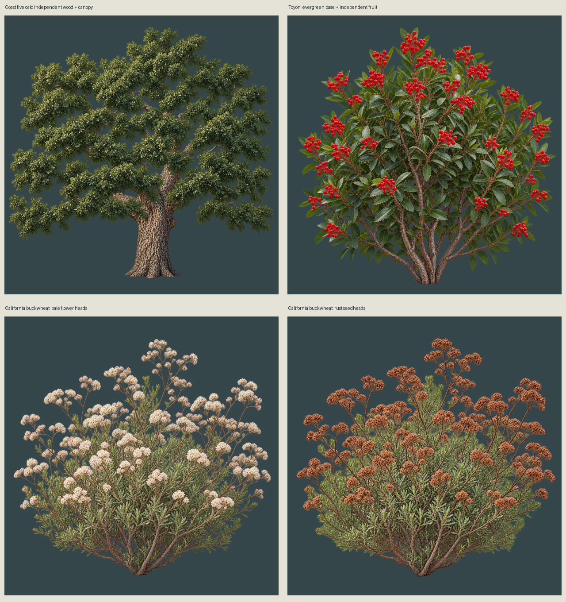

Coast live oak, toyon and California buckwheat. Real independent oak canopy and toyon fruit layers. Static state preview, not wind animation.

World scale is a proposal. Buckwheat root drifts approximately 3 source pixels between generated variants. Shared oak and toyon bases stay fixed. No engine admission claimed.